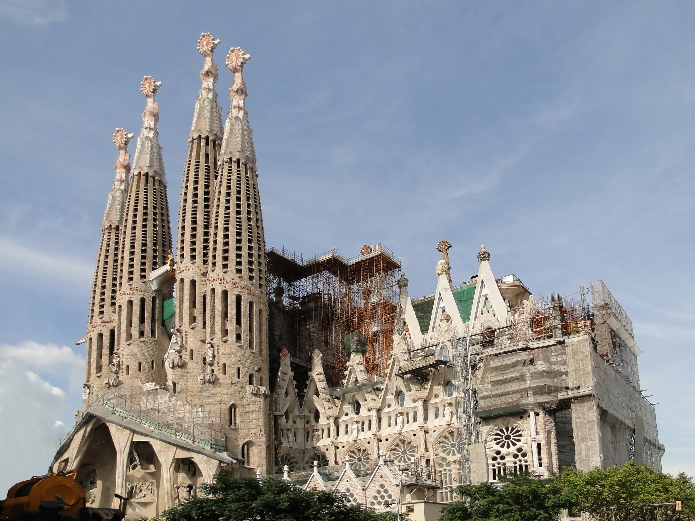
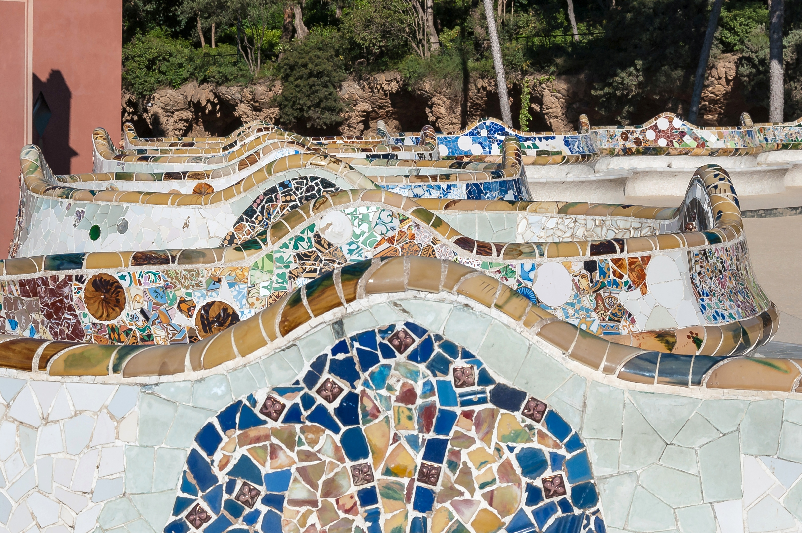
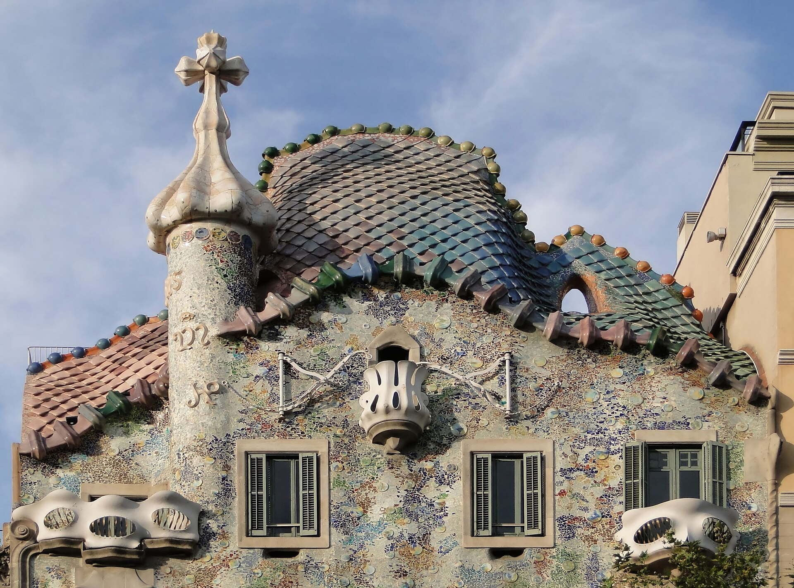
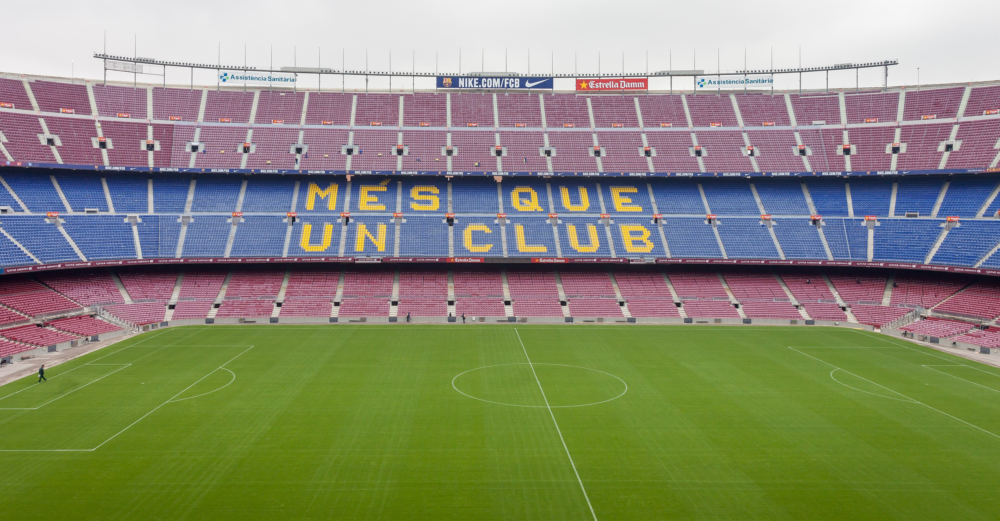

Sehenswürdigkeiten
Diese Orte solltest du in Barcelona gesehen haben.
Sagrada Família
Die Basilika von Antoni Gaudí wird seit 1882 gebaut und ist das Wahrzeichen der Stadt.

Park Güell
Der Park auf einem Hügel hat bunte Mosaike, die berühmte Drachenbrunnen-Treppe und eine tolle Aussicht über die Stadt.

Casa Batlló
Ein weiteres Gebäude von Gaudí am Passeig de Gràcia mit einer wellenförmigen Fassade.

La Rambla und Kolumbus-Denkmal
Die bekannte Flaniermeile führt vom Plaça de Catalunya bis zum Hafen und ist voller Läden, Cafés und Straßenkünstler. Am Ende steht das Kolumbus-Denkmal mit Blick auf Stadt und Hafen.

Camp Nou
Das Stadion des FC Barcelona ist eines der größten Fußballstadien Europas.

Gotisches Viertel
Das Barri Gòtic ist die Altstadt von Barcelona mit engen Gassen, der Kathedrale und vielen Resten aus römischer und mittelalterlicher Zeit.